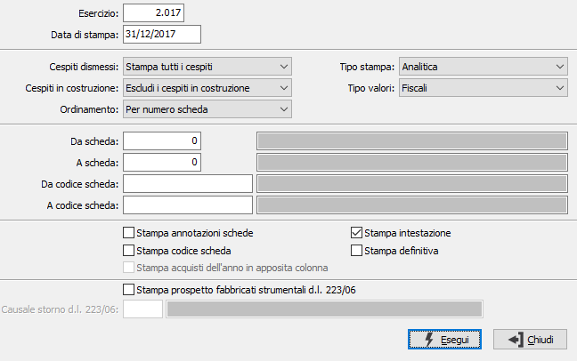

Stampa libro cespiti
Il programma effettua la stampa di prova o definitiva del libro cespiti, tenendo conto dei movimenti di ammortamento generati tramite il precedente programma di Generazione ammortamento fiscale.
La stampa di prova può essere eseguita più volte, soprattutto per verificare la disponibilità di un sufficiente numero di pagine del libro cespiti e per un controllo di completezza degli ammortamenti effettuati.
La stampa definitiva del libro cespiti può essere eseguita una sola volta, produce la "storicizzazione" dei totalizzatori relativi all’esercizio stampato e genera la situazione iniziale del nuovo esercizio. Per questo motivo deve essere eseguita successivamente all'apertura del nuovo esercizio (che viene normalmente effettuata nei primissimi giorni del nuovo esercizio, e quindi ben prima della registrazione delle scritture di rettifica dell'esercizio precedente, di cui fanno parte anche gli ammortamenti dei cespiti).

ESERCIZIO: indicare l'esercizio al quale si riferisce la stampa del libro cespiti. Viene automaticamente proposto l'esercizio corrente, modificabile. Non è consentita la conferma a vuoto.
DATA DI STAMPA: inserire la data che si desidera venga stampata nell’intestazione del libro cespiti. Viene proposta in automatico la data del giorno, modificabile.
CESPITI DISMESSI: definisce il trattamento dei cespiti dismessi. Valori ammessi: Tutti i cespiti; Esclude i cespiti dimessi; Solo i cespiti dimessi.
CESPITI IN COSTRUZIONE: definisce il trattamento dei cespiti in costruzione. Valori ammessi: Stampa tutti i cespiti; Escludi i cespiti in costruzione (privi di data inizio ammortamento).
ORDINAMENTO: definisce il tipo di ordinamento in stampa. Valori ammessi: Per numero scheda; Per data di acquisto; Per codice scheda.
TIPO STAMPA: definisce la tipologia di stampa: analitica o sintetica.
TIPO VALORI: il campo è presente solo se attiva la gestione degli ammortamenti fiscali e definisce se stampare i valori fiscali o civilistici.
DA SCHEDA: indica il numero del cespite con cui iniziare la selezione. Sul campo sono attive le funzioni di ricerca (F9). L'utilizzo del numero cespite annulla quello del codice e viceversa.
A SCHEDA: indica il numero del cespite con cui terminare la selezione. Sul campo sono attive le funzioni di ricerca (F9). L'utilizzo del numero cespite annulla quello del codice e viceversa.
DA CODICE SCHEDA: indica il codice del cespite con cui iniziare la selezione. Sul campo sono attive le funzioni di ricerca (F9). L'utilizzo del numero cespite annulla quello del codice e viceversa.
A CODICE SCHEDA: indica il codice del cespite con cui terminare la selezione. Sul campo sono attive le funzioni di ricerca (F9). L'utilizzo del numero cespite annulla quello del codice e viceversa.
STAMPA ANNOTAZIONI SCHEDA: definisce se deve essere stampato il contenuto del campo note (casella con segno di spunta).
STAMPA CODICE SCHEDA: definisce se deve essere stampato il codice del cespite (casella con segno di spunta).
STAMPA acquisti dell'anno in apposita colonna: attiva solo se viene effettuata la stampa sintetica; definisce se stampare gli acquisti dell'anno in una colonna separata (casella con segno di spunta).
STAMPA DEFINITIVA: indica se si tratta di stampa definitiva, con conseguente aggiornamento (casella con segno di spunta), oppure di stampa di prova.
STAMPA PROSPETTO FABBRICATI STRUMENTALI: attiva solo se vengono stampati i valori fiscali; definisce se effettuare a stampa del prospetto fabbricati strumentali in coda al libro cespiti (casella con segno di spunta).
CAUSALE STORNO D.L. 223/06: attiva solo se spuntata la casella precedente; indica la causale che è stata utilizzata per la registrazione dei movimenti di storno relativi ai fabbricati. Sul campo sono attive le funzioni di ricerca (F9).